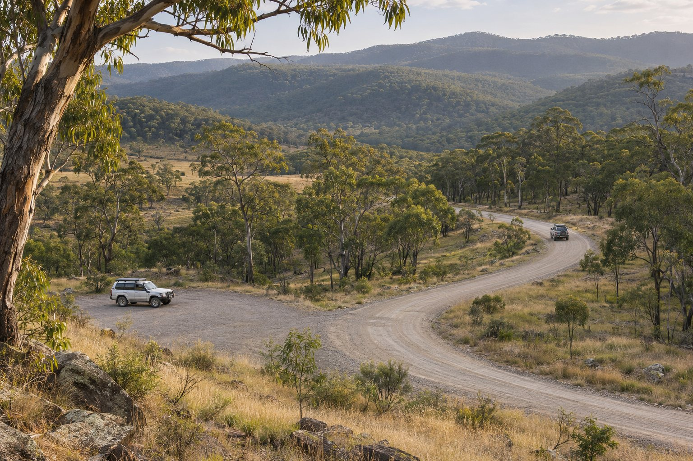
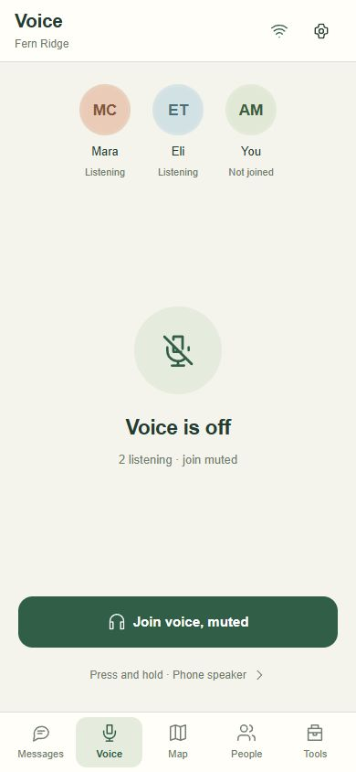

Android + Wi-Fi HaLow prototype
Keep the group together.
AuMaNET uses portable radio nodes so your group can check in, talk and share positions beyond mobile coverage while the nodes have a link.
The connection path
A local network you carry.
AuMaNET is an open-source prototype for small groups travelling beyond mobile coverage. It combines an Android app with a portable radio box, called a node. In the current two-person setup, each person has a phone and a node.
- Android app
- Your phone joins the nearby node using its usual Wi-Fi. The app is where you message, talk and see the map.
- Portable radio node
- The two nodes talk directly over Wi-Fi HaLow, a type of Wi-Fi built for longer radio links. This carries group traffic without a mobile tower or internet connection.
A check-in past the last bar.
Imagine two vehicles on a gravel road. Mobile service drops out, and the lead vehicle needs to tell the other where to stop.
- Before leaving Connect each phone to its node, join the same group and save the map area.
- With a radio link From the turnout, send “I’m here” with a photo of the entrance, or give directions over group voice.
- If the link drops The saved map still opens. Live voice and new updates need a working link again.

See what’s on the phone.
Design previews show example conversations and positions. Hardware tests so far cover two phones.
 View full size
View full size
Messages
Send a check-in or a photo of the turnoff. Delivery feedback tells you when another phone received it.


View full sizeGroup voice
Join the group voice channel and hold to talk when a decision is easier to say out loud.
 View full size
View full size
Offline map
Save the map before leaving. See positions from members who choose to share while the group has a link.
Which connection fits the trip?
Think about who you need to reach, what you need to send and what equipment you can bring.
-
Mobile network
Connection path Phone connects to Cell tower connects to Carrier network
- Good for
- Everyday calls, texts and internet, including reaching people far outside your group.
- Needs
- A working carrier network and coverage where you’re using it.
-
UHF CB radio
Connection path UHF radio connects to UHF radio
- Good for
- Quick spoken calls between vehicles or handhelds on a shared channel.
- Needs
- UHF CB radios in range of each other, or access to a compatible repeater.
-
Meshtastic
Connection path LoRa radio connects to Optional relay connects to LoRa radio
- Good for
- Short texts and position updates over a low-power LoRa mesh. Radios can pass messages for one another.
- Needs
- Compatible LoRa radios and a usable path through the mesh.
-
AuMaNET
Connection path Android connects to HaLow node pair connects to Android
- Good for
- Group voice, text, photos and shared positions in one Android app beyond mobile coverage.
- Needs
- An Android phone and a powered HaLow node at each end, with a usable radio link between the nodes.
AuMaNET’s group link works without internet. Optional internet sharing still needs a group member with an active mobile data connection.
What’s been tested?
Development tests cover two specific Android phones and two directly linked nodes. Range, battery life, larger groups and forwarding through a third node still need field validation. Carry independent emergency communications.
Try the prototype.
Check the hardware used in development and choose the guide that matches the equipment you have.
Check phones and hardware